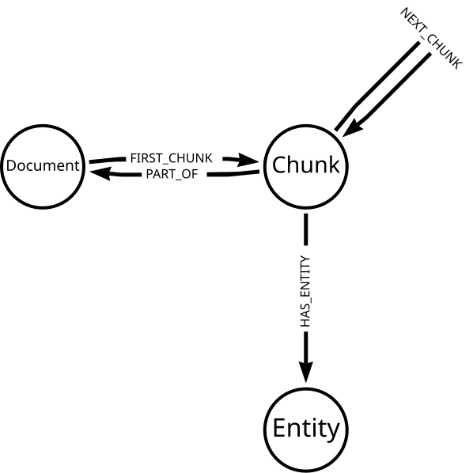
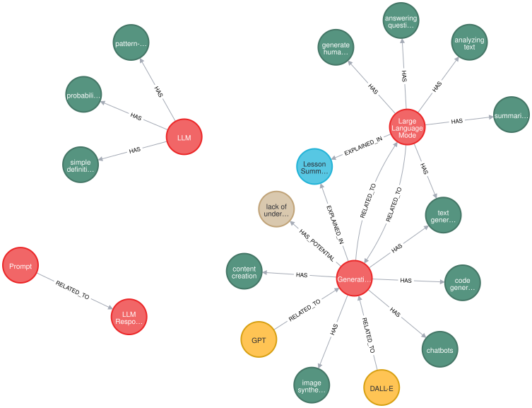
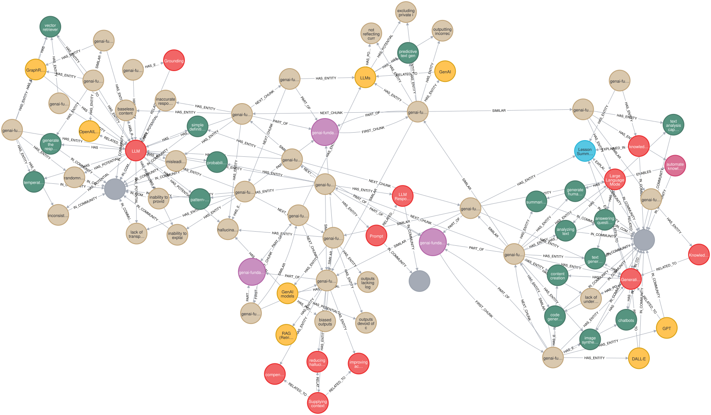

Explore the Knowledge Graph
In this lesson, you will explore the knowledge graph created by the LLM Graph Builder.
Model
The structure created by the LLM Graph Builder is a good template for a knowledge graph that you can use in your projects.
-
Each
Documentnode represents a document or text source uploaded to the LLM Graph Builder. -
The
Documentis split intoChunknodes, identified byFIRST_CHUNKandPART_OFrelationships. -
The LLM processes the chunks and
Entitynodes extracted. The graph connects theEntitynodes to theChunknodes using theHAS_ENTITYrelationship.
The LLM may also extract relationships between the entities, and the graph will hold relationships between the Entity nodes.
This model allows you to relate the entities within the knowledge graph to the source documents they refer to.
Explore
Review this Cypher query before running it. What do you expect to see?
MATCH (d:Document
{fileName:'genai-fundamentals_1-generative-ai_1-what-is-genai.pdf'}
)
MATCH (d)<-[:PART_OF]-(c:Chunk)-[:HAS_ENTITY]->(e)
RETURN eClick here to reveal the result
Running this query will return all the entities extracted from the document genai-fundamentals_1-generative-ai_1-what-is-genai.pdf.

You can modify the query to return the label and ID of the entities.
MATCH (d:Document
{fileName: 'genai-fundamentals_1-generative-ai_1-what-is-genai.pdf'}
)
MATCH (d)<-[:PART_OF]-(c:Chunk)-[:HAS_ENTITY]->(e)
RETURN labels(e) as labels, e.id as entityThe results provide detail of the entities extracted from the document.
| labels | entity |
|---|---|
|
|
|
|
|
|
|
|
|
The Entity node label is a generic label applied to all entities to manage indexing and querying.
|
Important
|
LLM variability
The results will vary; an LLM extracted the data, and the results have inherent variability.
|
By matching a path from the document to the entities, you can see how the entities relate to the document.
MATCH (d:Document
{fileName:'genai-fundamentals_1-generative-ai_1-what-is-genai.pdf'}
)
MATCH p = (d)-[*0..3]-(e)
RETURN p|
Tip
|
Adjusting path depth
The [*0..3] pattern matches paths of up to three relationships between the document and the entities.
Increasing the number will return more complex paths, but the query will take longer.
|

You can see what documents contain a specific entity.
MATCH (e:Concept {id: "GraphRAG"})<-[:HAS_ENTITY]-(c:Chunk)-[:PART_OF]->(d:Document)
RETURN DISTINCT d.fileNameTake some time to experiment with the data in your knowledge graph.
When ready, continue to the next lesson to learn to query a knowledge graph.
read::Continue[]
Summary
In this lesson, you explored the knowledge graph’s data model and entities.
In the next lesson, you will learn how to techniques for querying knowledge graphs using Cypher.